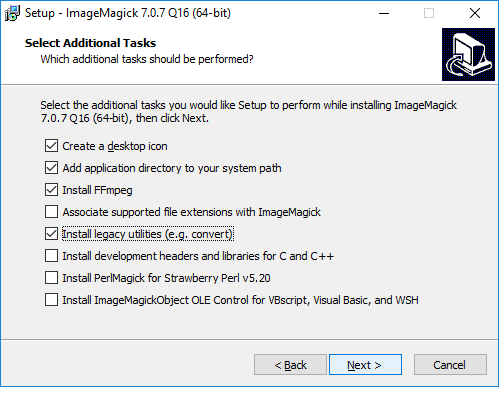

When you try to install some of the software below on the Mac, you may be warned that it comes from an unidentified developer. If this happens, right-click the installer file and select Open.
Some of the tools we will use are Chrome extensions. Ensure that you have the latest version of this popular web browser. Download Chrome from here; if already installed, make sure you are updated to the latest version following these instructions.
A powerful tool for data cleaning, once owned by Google, now open source. Download the latest version, 3.1, from here. When launched, Open Refine will work in your default web browser; note that your data remains on your computer, and is not uploaded to the web.
Our spreadsheet application for these classes will be Google Sheets. Use from your Google Drive account.
A web app for makign charts from data. Sign up for a free account here.
R is a software environment and programming language for statistical computing, data analysis, and graphics. Think of it as a Swiss Army knife for working with data. Download the latest installer for your operating system from here. R Studio provides a user interface that makes it much easier to use. Download the latest free version of RStudio Desktop from here.
For some exercises, you will need a text editor optimized for authoring web pages. Download from here.
Your go-to resource for color schemes to encode data. Web app: no installation required.
ImageMagick is a software library for creating, editing, converting and manipulating images, including animated GIFs. FFmpeg is a software library that records and converts audio and video.
We will use them in conjunction with R to make animated graphics. They take some time to install, so it is important that you do this before class.
Here are the steps for installation on the Mac:
Download and install Xcode.
About this Mac.Open a Terminal window (find under Applications>Utilities) and enter:
xcode-select --install
This will install Xcode’s command line tools, which are required for MacPorts, the installer we will use to install the two software libraries.
Download and install the correct version of MacPorts for your Mac OS.
In the Terminal, enter:
sudo port install ImageMagick
You will be required to enter your Mac password. The installation will take some time to complete. This is a good time to make a cup of coffee.
sudo port install ffmpeg
On Windows, you should be able to install ImageMagick and FFmpeg from here. Unless you have an old Windows 32-bit operating system, click on the HTTP download link to install the “Win64 dynamic at 16 bits-per-pixel component” version.
When you get to the dialog box, make sure that the boxes are checked as follows, to ensure that you also install FFmpeg and the legacy utilities:
